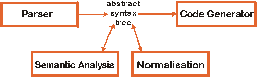

age becomes
self.age)The purpose of the compiler is to generate code out of OCL expressions. The generated code evaluates the OCL constraint for a model instance, i.e. a program or data base, at runtime. Constraints formulated during analysis and design can then easily be checked in the implementation.
While the Java code generator that is being implemented makes certain restrictions to the OCL constructs that can be used, the other compiler modules are implemented as close to the OCL specification of UML 1.3 as possible.
The compiler is constructed of modules with separated responsibilities to allow easy reuse or replacement. The architecture is flexible enough to adapt the existing modules to a variety of purposes, such as code generation for other languages or OCL interpretation.

The parser is built using the tool SableCC. It complies to OCL 1.3, with slight changes where inconsistencies in the specification where found (e.g. the specification grammar lacks some literals and the possiblity to express calls to the Collection operation "iterate").
The parser can be examined with the demo application. Just enter an OCL expression into the text area on the tab "constraint" and click the "Parse" button.
Semantic analysis consists of simple consistency checks and type checking. An
example for a consistency check is that an expression must have an operation
context (like context Person::getAge()) if and only if it has an
pre or post stereotype. Besides assuring the
correctness of an OCL expression with reference to some source of model
information, the type checker adds type information to some abstract syntax
nodes and to variables. This information is available to other modules.
The compiler automatically type-checks any OCL expression that is
parsed. Since type checking requires model information, that will only be
successful if the entered OCL expression complies to one of the
UML diagrams
supported by the implemented type information component
unless another model information source is selected on
the tab "model". The source for such model information can of course be adapted
in the compiler by implementing the interfaces ModelFacade and
Any (see interfaces).
As a result of type checking some of the abstract syntax tree's nodes display their type in the tree view (after the second '-'). Basically, all *Expression nodes (Expression, LogicalExpression, ...), all literals and nodes of type PostfixExpressionTail carry type information. Type checking is successful if the top expression node(s) are found to be of type Boolean. This is indicated by a green mark under "Type Check" on the tab "AST".
To pave the way for code generation, normalization steps can be applied to the abstract syntax tree. This reduces code generator complexity. Instead of defining one OCL normal form, a set of normalization steps can be fitted together to generate a normal form specific to the desired target language. Examples for normalization steps are:
Explicit qualification of names (age becomes
self.age) | |
| Insertion of iterators | |
| Insertion of type information | |
| Expansion of multiple iterators |
The demo application normalizes the abstract syntax tree using a normalization pattern adapted for the Java code generator when the "Normalize" button on the tab "AST" is pressed. The "To Text" button then writes the normalized constraint back into the text field of tab "constraint".
A Java code generator is part of the OCL compiler. The Java code generated by it uses an class libary that represents the OCL type system. The following two tables show examples of generated code, including the original OCL expression.
context Company inv: manager.age >= 18 |
|
context Company inv: employees->isUnique(name) |
|
The demo application allows to generate code by clicking the "Generate" button on the tab "Java".
librarygetFeature in the example code above).
It is adaptable in some respects to different code generators.
interfaces| OCL constraint: the compiler is invoked with a simple String | |
| Model information: information from the UML model is necessary for type checking. This interface is described below. | |
Target code interface: The compiler will produce a String in the
target language (Java, SQL, ...) and will pass this String to the CASE
tool along with some other information (something like "this String is a
postcondition for Person::getIncome()") |
In the demo application, information for the first interface is entered into the text area. The second interface can be configured on the tab "model". By default it is implemented to return information for two default models. The demo application's implementation of the third interface displays the information on the tab "Java".
The following class diagrams shows the internal type representation classes
of the type checker. To adapt this to a new source of model information (e.g. a
CASE tool, or some "hard-wired" model like for the demo application) the interface
ModelFacade has to be implemented to return objects fulfilling the
Any interface which defines methods for access to attributes with
and without parameters. An ModelFacade object is passed to the
constructor of the TypeChecker class.

An example of the communication between the OCL compiler's type checker and an implementation of these interfaces is shown in the following sequence diagram.